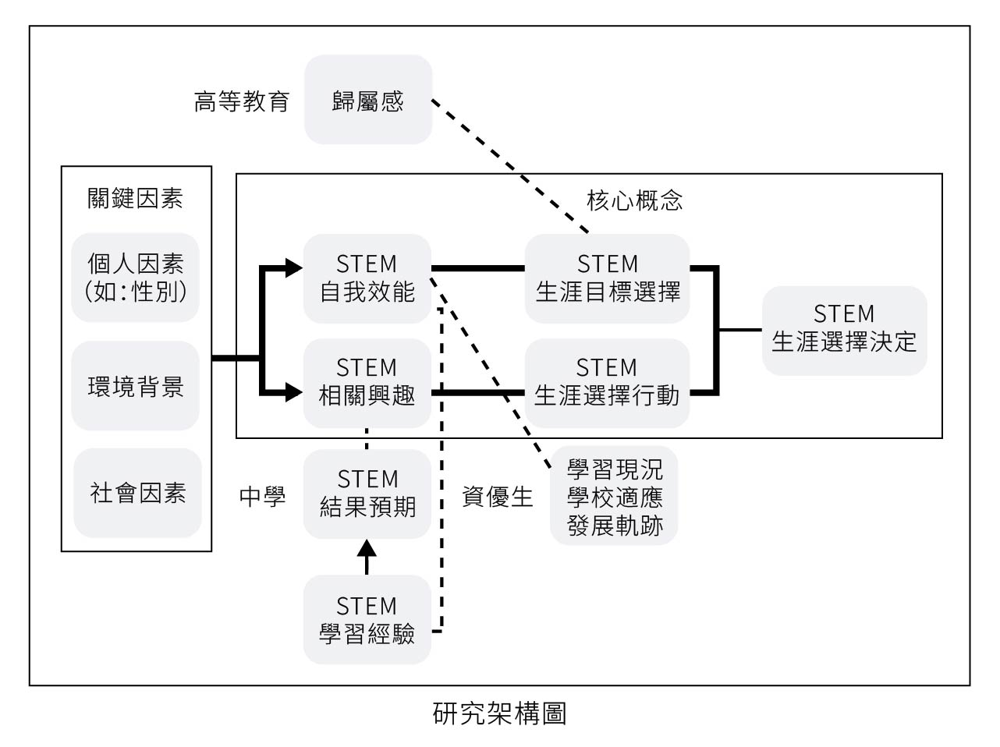

計畫簡介
本整合型研究計畫將針對國高中、資優生、高等教育進行學生生涯影響因素探討，並且以質性與量化方式進行蒐集及分析資料。本整合計畫將蒐集各就學階段學生的訪談及全國長期追蹤調查資料，並建構資料庫平台儲存研究資料，以提供學術研究及後續相關教育政策參考，並且同時培育學術研究人才。
本計畫通過三個子計畫分別研究這些階段的生涯影響因素和性別差異。
- 子計畫一：透以STEM學習動量理論、社會認知生涯理論（SCCT）及生態理論（EST）為基礎建構研究架構，透過文獻分析、焦點團體訪談、問卷調查及深度訪談，系統性了解中學生如何長期累積STEM學習經驗及規劃生涯進路，及關鍵的影響因素。
- 子計畫二：追蹤數理資優生之學習、適應，以及其才能與生涯發展軌跡及其影響因素之情形，分層調查國小高年級、國中、高中與大學階段STEM領域資優女學生的情形，並比較不同性別學生的發展與差異情形。
- 子計畫三：針對STEM相關領域之高等教育學生，探討生涯發展影響因素與性別差異，並以三年期規劃探討其變化歷程。預期將建構出符合我國高等教育STEM人才的生涯發展因素之相關量表。綜整所有長期追蹤的研究結果，針對高等教育STEM人才之生涯發展提出具體建議。
研究架構
計畫整合三項子計畫架構如下圖，包含關鍵因素、核心構念及子計畫各自延伸構念。以期望價值模型為基礎，將性別、學習經驗項目歸類為個人因素，連同環境背景、社會因素形成關鍵因素。再以SCCT作為核心構念之架構，包含STEM自我效能、STEM相關興趣、STEM生涯選擇目標、STEM生涯選擇行動，最終導向STEM生涯選擇決定。STEM動量學習理論。考慮到各子計畫研究對象之特性，各自延伸需包含屬於計畫之構念。中學生以STEM學習經驗、STEM結果預期等構念解釋該時期較為著重於成績的特性；資優生以學習現況、學校適應、發展軌跡等構念探討不易適應及快速成長之特性，高等教育生以歸屬感之構念討論學生在校園環境的認同感、被接納感對於課業表現、生涯選擇的影響。
